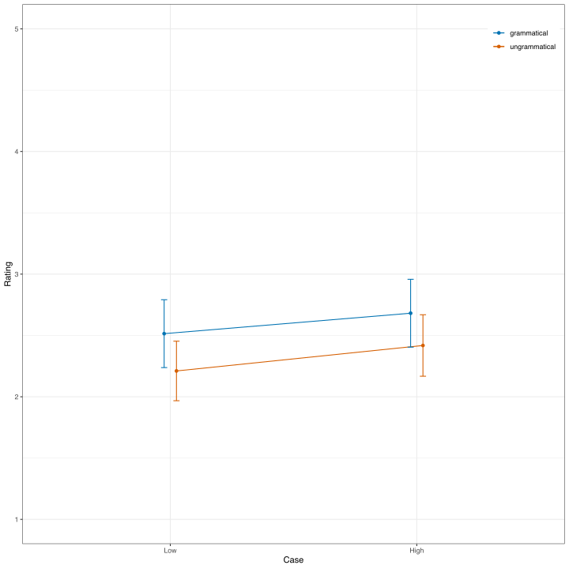
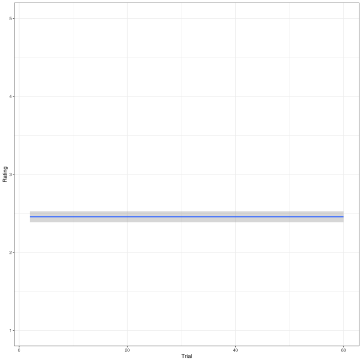
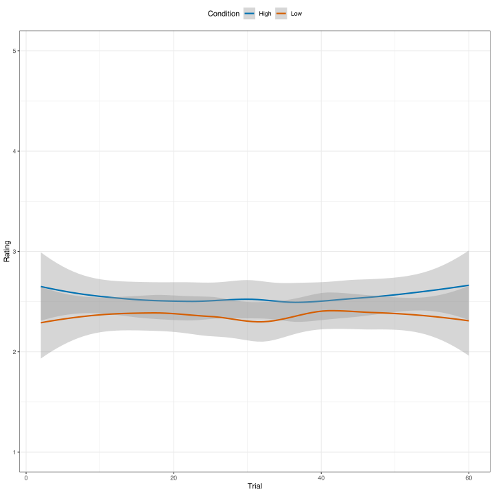

using AlgebraOfGraphics
using Arrow
using CairoMakie # graphics back-end
using CategoricalArrays
using Chain
using DataFrames
using DataFrameMacros # simplified dplyr-like data wrangling
using KernelDensity # density estimation
using MixedModels
using MixedModelsMakie # diagnostic plots
using ProgressMeter
using Random # random number generators
using RCall # call R from Julia
using StatsModels
using AlgebraOfGraphics: boxplot
using AlgebraOfGraphics: density
using MixedModelsMakie: qqnorm
using MixedModelsMakie: ridgeplot
using MixedModelsMakie: scatter
using MixedModelsMakie: caterpillar
ProgressMeter.ijulia_behavior(:clear);
CairoMakie.activate!(; type="svg");Özge Bakay: Missing Verb Illusion
RePsychLing SMLP2022
1 Background
The experiment investigates whether there is missing-verb illusion in Turkish center-embeddings and whether case similarity has an effect on the presence of illusion. The experiment has a 2x2 design where the factors are Grammaticality (Grammatical vs. Ungrammatical) and Case Similarity (High vs. Low). Both factors varied within-subject and within-item. The primary dependent variable is a 5-point rating.
The analysis includes data from 56 subject (after exclusion of one subject with low accuracy) who rated 24 critical items (6 in each of the 2 x 2 conditions; nobs=1344. Subjects also rated 36 filler items that are excluded here, but might be used to assess rating bias.
With 56 (or 57) subjects and 24 items, assignment of items to conditions could not be counterbalanced across subjects. The assignment was not random because each item was seen by 20, 13, 13, and 11 subjects across the four conditions.
The gaol of the analysis is to test effects with a cumulative link mixed model for ordinal rating data, basically an integrated set of logistic regressions, taking into account clustering of ratings by subjects and by items.
2 Setup
First attach the MixedModels.jl package and other packages for plotting. The CairoMakie.jl package allows the Makie graphics system [@Danisch2021] to generate high quality static images. Activate that package with the SVG (Scalable Vector Graphics) backend.
- The data are available as an arrow file.
- Most of preprocessing was done with R in RStudio.
- Order of factor levels should be checked.
df = DataFrame(Arrow.Table("./data/Bakay_rating.arrow"));
@transform!(df, :Subj = @bycol categorical(:Subj))
@transform!(df, :Item = @bycol categorical(:Item))
@transform!(df, :Case = @bycol categorical(:Case))
@transform!(df, :Gram = @bycol categorical(:Gram))
@transform!(df, :tr_c = :trial - 30);
describe(df)7 rows × 7 columns
| variable | mean | min | median | max | nmissing | eltype | |
|---|---|---|---|---|---|---|---|
| Symbol | Union… | Any | Union… | Any | Int64 | Type | |
| 1 | Subj | S01 | S57 | 0 | Union{Missing, CategoricalValue{String, UInt32}} | ||
| 2 | Item | I01 | I24 | 0 | Union{Missing, CategoricalValue{String, UInt32}} | ||
| 3 | trial | 31.2412 | 2.0 | 31.5 | 60.0 | 0 | Union{Missing, Float64} |
| 4 | Case | High | Low | 0 | Union{Missing, CategoricalValue{String, UInt32}} | ||
| 5 | Gram | Gra | Ungra | 0 | Union{Missing, CategoricalValue{String, UInt32}} | ||
| 6 | rating | 2.45614 | 1.0 | 2.0 | 5.0 | 0 | Union{Missing, Float64} |
| 7 | tr_c | 1.24123 | -28.0 | 1.5 | 30.0 | 0 | Float64 |
3 Figures
3.1 Case x Gram
RCall.ijulia_setdevice(MIME("image/svg+xml"); width=10, height=10.0)
@rput df;
R"""
suppressWarnings(suppressMessages(library(tidyverse)))
# respecting color vision deficiency
cbPalette <- c( "#0072B2", "#D55E00", "#009E73", "#CC79A7",
"#F0E442", "#56B4E9", "#999999", "#E69F00")
table1 <-
df |>
group_by(Subj, Case, Gram) |>
summarise(N=n(), rating=mean(rating)) |>
ungroup() |>
group_by(Case, Gram) |>
summarise(N=n(), rating_M=mean(rating),
rating_SD=sd(rating), rating_SE=rating_SD/sqrt(N))
fig1 <-
table1 |>
mutate(Case=fct_rev(Case)) |>
ggplot(aes(x=Case, y=rating_M, group=Gram, color=Gram)) +
geom_point(position=position_dodge(width=.1)) +
geom_line(position=position_dodge(width=.1)) +
geom_errorbar(aes(ymax=rating_M + 2*rating_SE,
ymin=rating_M - 2*rating_SE), width=.05,
position=position_dodge(width=.1)) +
scale_color_manual("", labels=c("grammatical", "ungrammatical"), values=cbPalette)+
scale_y_continuous("Rating", limits=c(1,5)) +
theme_bw() + theme(legend.position = c(.99, .99), legend.justification = c(.99,.99))
print(fig1)
""";┌ Warning: RCall.jl: `summarise()` has grouped output by 'Subj', 'Case'. You can override using the
│ `.groups` argument.
│ `summarise()` has grouped output by 'Case'. You can override using the
│ `.groups` argument.
└ @ RCall /Users/reinholdkliegl/.julia/packages/RCall/6kphM/src/io.jl:172
3.2 Trial
R"""
fig2 <-
df |>
ggplot(aes(x=trial, y=rating)) +
geom_smooth() +
xlab("Trial") +
scale_y_continuous("Rating", limits=c(1,5)) +
theme_bw() + theme(legend.position = "top")
print(fig2)
""";┌ Warning: RCall.jl: `geom_smooth()` using method = 'gam' and formula 'y ~ s(x, bs = "cs")'
└ @ RCall /Users/reinholdkliegl/.julia/packages/RCall/6kphM/src/io.jl:172
3.3 Trial x Case x Gram
R"""
fig3 <-
df |>
ggplot(aes(x=trial, y=rating, group=Case, color=Case)) +
geom_smooth() +
xlab("Trial") +
scale_y_continuous("Rating", limits=c(1,5)) +
scale_colour_manual("Condition", values=cbPalette) +
theme_bw() + theme(legend.position = "top")
print(fig3)
""";┌ Warning: RCall.jl: `geom_smooth()` using method = 'loess' and formula 'y ~ x'
└ @ RCall /Users/reinholdkliegl/.julia/packages/RCall/6kphM/src/io.jl:172
Not much evidence for a trial effect.
4 LMM
4.1 Contrasts
contrasts = merge(
Dict(:Case => EffectsCoding(base= "Low"; levels=["Low", "High"])),
Dict(:Gram => EffectsCoding(base= "Ungra"; levels=["Ungra", "Gra"])),
Dict(nm => Grouping() for nm in (:Subj, :Item))
);4.2 Varying only GM
m0 = let
form = @formula(rating ~ 1 + tr_c + Case * Gram + (1|Subj) + (1|Item));
fit(MixedModel, form, df; contrasts);
end;
m0Minimizing 42 Time: 0:00:00 (20.75 ms/it)| Est. | SE | z | p | σ_Subj | σ_Item | |
|---|---|---|---|---|---|---|
| (Intercept) | 2.4558 | 0.1190 | 20.63 | <1e-93 | 0.8590 | 0.1095 |
| tr_c | 0.0003 | 0.0016 | 0.17 | 0.8688 | ||
| Case: High | 0.0941 | 0.0269 | 3.50 | 0.0005 | ||
| Gram: Gra | 0.1435 | 0.0269 | 5.33 | <1e-07 | ||
| Case: High & Gram: Gra | -0.0144 | 0.0269 | -0.54 | 0.5926 | ||
| Residual | 0.9901 |
Remove trial covariate
m1 = let
form = @formula(rating ~ 1 + Case * Gram + (1|Subj) + (1|Item));
fit(MixedModel, form, df; contrasts);
end;
m1| Est. | SE | z | p | σ_Subj | σ_Item | |
|---|---|---|---|---|---|---|
| (Intercept) | 2.4561 | 0.1190 | 20.64 | <1e-93 | 0.8591 | 0.1094 |
| Case: High | 0.0940 | 0.0269 | 3.50 | 0.0005 | ||
| Gram: Gra | 0.1436 | 0.0269 | 5.34 | <1e-07 | ||
| Case: High & Gram: Gra | -0.0142 | 0.0269 | -0.53 | 0.5959 | ||
| Residual | 0.9901 |
We don’t need trial as a covariate. Probably, we could also drop the interaction at least from the random-effect structure.
4.3 Individual and item differences in main effects
Relative to the factorial design this is not the maximal CLMM; we do not include Subj- and Item-related VCs for the interaction term.
m2 = let
form = @formula(rating ~ 1 + Case * Gram + (1 + Case + Gram |Subj) + (1 + Case + Gram |Item));
fit(MixedModel, form, df; contrasts);
end;
display(issingular(m2))
display(m2.PCA[:Subj])
display(m2.PCA[:Item])
display(lrtest(m1, m2))
m2Minimizing 1092 Time: 0:00:00 ( 0.49 ms/it)true
Principal components based on correlation matrix
(Intercept) 1.0 . .
Case: High -0.4 1.0 .
Gram: Gra 0.23 -0.99 1.0
Normalized cumulative variances:
[0.7193, 1.0, 1.0]
Component loadings
PC1 PC2 PC3
(Intercept) -0.36 -0.92 0.13
Case: High 0.67 -0.16 0.72
Gram: Gra -0.65 0.35 0.68
Principal components based on correlation matrix
(Intercept) 1.0 . .
Case: High 0.1 1.0 .
Gram: Gra 0.62 0.84 1.0
Normalized cumulative variances:
[0.6984, 1.0, 1.0]
Component loadings
PC1 PC2 PC3
(Intercept) -0.45 0.8 -0.39
Case: High -0.57 -0.59 -0.57
Gram: Gra -0.69 -0.03 0.72Likelihood-ratio test: 2 models fitted on 1368 observations
─────────────────────────────────────────────────────────
DOF ΔDOF LogLik Deviance Chisq p(>Chisq)
─────────────────────────────────────────────────────────
[1] 7 -2017.6198 4035.2397
[2] 17 10 -1986.1561 3972.3122 62.9275 <1e-08
─────────────────────────────────────────────────────────| Est. | SE | z | p | σ_Subj | σ_Item | |
|---|---|---|---|---|---|---|
| (Intercept) | 2.4551 | 0.1196 | 20.52 | <1e-92 | 0.8638 | 0.1170 |
| Case: High | 0.0924 | 0.0295 | 3.14 | 0.0017 | 0.0096 | 0.0723 |
| Gram: Gra | 0.1429 | 0.0494 | 2.89 | 0.0039 | 0.2899 | 0.0869 |
| Case: High & Gram: Gra | -0.0154 | 0.0256 | -0.60 | 0.5461 | ||
| Residual | 0.9372 |
The random-effect structure is overparaemterized. Actually, the program crashed.
4.4 Zero-correlation parameters CLMM
m3 = let
form = @formula(rating ~ 1 + Case * Gram + zerocorr(1 + Case + Gram | Subj) + zerocorr(1 + Case + Gram | Item));
fit(MixedModel, form, df; contrasts);
end;
display(issingular(m3))
display(m3.PCA[:Subj])
display(m3.PCA[:Item])
display(lrtest(m1, m3, m2))
m3true
Principal components based on correlation matrix
(Intercept) 1.0 . .
Case: High 0.0 0.0 .
Gram: Gra 0.0 0.0 1.0
Normalized cumulative variances:
[0.5, 1.0, 1.0]
Component loadings
PC1 PC2 PC3
(Intercept) 1.0 0.0 0.0
Case: High 0.0 0.0 NaN
Gram: Gra 0.0 1.0 0.0
Principal components based on correlation matrix
(Intercept) 1.0 . .
Case: High 0.0 1.0 .
Gram: Gra 0.0 0.0 1.0
Normalized cumulative variances:
[0.3333, 0.6667, 1.0]
Component loadings
PC1 PC2 PC3
(Intercept) 1.0 0.0 0.0
Case: High 0.0 1.0 0.0
Gram: Gra 0.0 0.0 1.0Likelihood-ratio test: 3 models fitted on 1368 observations
─────────────────────────────────────────────────────────
DOF ΔDOF LogLik Deviance Chisq p(>Chisq)
─────────────────────────────────────────────────────────
[1] 7 -2017.6198 4035.2397
[2] 11 4 -1989.8545 3979.7089 55.5308 <1e-10
[3] 17 6 -1986.1561 3972.3122 7.3967 0.2857
─────────────────────────────────────────────────────────| Est. | SE | z | p | σ_Subj | σ_Item | |
|---|---|---|---|---|---|---|
| (Intercept) | 2.4569 | 0.1191 | 20.62 | <1e-93 | 0.8603 | 0.1153 |
| Case: High | 0.0946 | 0.0276 | 3.43 | 0.0006 | 0.0000 | 0.0506 |
| Gram: Gra | 0.1425 | 0.0484 | 2.94 | 0.0032 | 0.2890 | 0.0726 |
| Case: High & Gram: Gra | -0.0161 | 0.0256 | -0.63 | 0.5294 | ||
| Residual | 0.9406 |
Some of the VCs are very close to zero. Program crashed, again.
4.5 Parsimonious CLMM
m4 = let
form = @formula(rating ~ 1 + Case * Gram + zerocorr(1 + Gram | Subj) + zerocorr(1 + Case | Item));
fit(MixedModel, form, df; contrasts)
end;
display(issingular(m4))
display(lrtest(m1, m4, m3, m2))
m4falseLikelihood-ratio test: 4 models fitted on 1368 observations
─────────────────────────────────────────────────────────
DOF ΔDOF LogLik Deviance Chisq p(>Chisq)
─────────────────────────────────────────────────────────
[1] 7 -2017.6198 4035.2397
[2] 9 2 -1990.3539 3980.7079 54.5318 <1e-11
[3] 11 2 -1989.8545 3979.7089 0.9990 0.6068
[4] 17 6 -1986.1561 3972.3122 7.3967 0.2857
─────────────────────────────────────────────────────────| Est. | SE | z | p | σ_Subj | σ_Item | |
|---|---|---|---|---|---|---|
| (Intercept) | 2.4563 | 0.1192 | 20.60 | <1e-93 | 0.8609 | 0.1160 |
| Case: High | 0.0940 | 0.0279 | 3.37 | 0.0008 | 0.0548 | |
| Gram: Gra | 0.1425 | 0.0461 | 3.09 | 0.0020 | 0.2883 | |
| Case: High & Gram: Gra | -0.0155 | 0.0256 | -0.60 | 0.5459 | ||
| Residual | 0.9432 |
Looking good!
4.6 Extending the parsimonious CLMM with CPs
m5 = let
form = @formula(rating ~ 1 + Case * Gram + (1 + Gram | Subj) + (1 + Case | Item)) ;
fit(MixedModel, form, df; contrasts)
end;
display(issingular(m5))
display(lrtest(m4, m5))
m5falseLikelihood-ratio test: 2 models fitted on 1368 observations
────────────────────────────────────────────────────────
DOF ΔDOF LogLik Deviance Chisq p(>Chisq)
────────────────────────────────────────────────────────
[1] 9 -1990.3539 3980.7079
[2] 11 2 -1989.2994 3978.5988 2.1091 0.3483
────────────────────────────────────────────────────────| Est. | SE | z | p | σ_Subj | σ_Item | |
|---|---|---|---|---|---|---|
| (Intercept) | 2.4563 | 0.1192 | 20.61 | <1e-93 | 0.8606 | 0.1154 |
| Case: High | 0.0940 | 0.0280 | 3.36 | 0.0008 | 0.0554 | |
| Gram: Gra | 0.1416 | 0.0461 | 3.07 | 0.0021 | 0.2887 | |
| Case: High & Gram: Gra | -0.0155 | 0.0256 | -0.60 | 0.5458 | ||
| Residual | 0.9432 |
Looking also good, but the two CPs are not significant.
5 Summary
- There is evidence for significant individual differences in the effect of Gram and in the Grand Mean
- There is evidence for significant item differences in the effect of Case and in the Grand Mean
- There is no evidence for correlation parameters.
- There are two significant main effects of Case and Gram, irrespective of the complexity of the random-effect struture.
6 Appendix
versioninfo()Julia Version 1.8.0
Commit 5544a0fab76 (2022-08-17 13:38 UTC)
Platform Info:
OS: macOS (x86_64-apple-darwin21.4.0)
CPU: 12 × Intel(R) Core(TM) i9-8950HK CPU @ 2.90GHz
WORD_SIZE: 64
LIBM: libopenlibm
LLVM: libLLVM-13.0.1 (ORCJIT, skylake)
Threads: 1 on 6 virtual cores